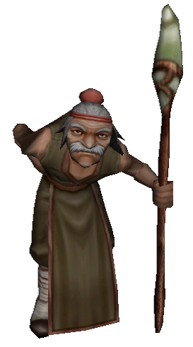
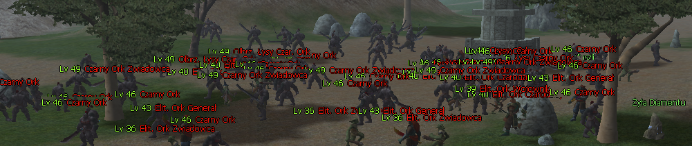

Crafting 1
100%


Patch notes
Nowe craftingi
W ostatnim czasie na serwerze przybyło Zielonych Smoczych Fasolek, dlatego dodaliśmy nowe receptury u Alchemika. Ich celem jest ograniczenie losowości podczas wytwarzania Smoczych Kamieni i wygodniejsze przetwarzanie większych ilości Cor Draconis.

Każda z poniższych receptur ma 100% szansy powodzenia.

Zdecydowaliśmy się dodać kilka grup Czarnych Orków do spotu Jinno .

Dodano miękki limit obrażeń w PvP podczas walki na polimorfii. Od teraz postać korzystająca z polimorfii nie będzie mogła zadać innej postaci więcej niż 9000 obrażeń jednym trafieniem.
Limit dotyczy wyłącznie starć PvP z innymi postaciami.
Wprowadziliśmy korekty dropu wybranych przedmiotów:

Szansa na zdobycie przedmiotu została dostosowana w taki sposób, aby jego globalna dostępność na serwerze spadła o około 7%.

Szansa na zdobycie przedmiotu została dostosowana w taki sposób, aby jego globalna dostępność na serwerze spadła o około 4,5%.
Dodano zapisywanie wybranych filtrów chatu. Od teraz ustawienia pozostają aktywne po ponownym zalogowaniu, zmianie kanału oraz zmianie lokacji, dzięki czemu nie trzeba konfigurować ich ponownie przy każdej zmianie mapy lub przełączeniu CH.
Poprawiono bonusy gildii na 20 poziomie. Od teraz system prawidłowo nadaje wszystkie bonusy przypisane do tego poziomu rozwoju gildii.
Dodano opcję zwiększania limitu członków w gildii. Funkcja jest dostępna od 20 poziomu gildii. Za każdy dodatkowy slot będzie pobierana opłata w wysokości 500 Eliksirów Gildii.

 Jinno
Jinno